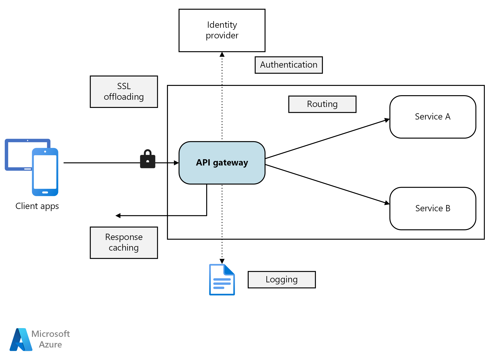

Gateway
Gateway funciona como uma espécie de portal, ou seja, age como uma espécie de “fio condutor” da conexão do dispositivo com a internet. Dessa forma, o gateway age com o objetivo de obter as informações requeridas previamente pelo usuário, através do acesso nas páginas de internet ou aplicativos instalados no celular.
No início da oferta de conexão à internet, era comum que esse gateway estivesse conectado a uma só fonte, tornando inviável o acesso do usuário continuamente. Com o avanço tecnológico impulsionado pela rede sem fio, atualmente podemos encontrá-lo atrelado a um roteador que gera sinal de internet por todo o espaço ao qual está instalado.
Como Funciona?
Partindo do pressuposto de que o gateway é o portal entre a internet e o usuário que deseja se conectar a ela, essa comunicação só é realizada através do endereço de IP de cada um dos envolvidos nesse processo. Sendo assim, a conexão só consegue ser estabelecida caso exista um mecanismo que possa prover o encontro desses dois IPs, por não existir uma comunicação direta de IP para outro IP — justamente pelo fato de serem números distintos — a intermediação fica a par do gateway.
Essa ferramenta serve, portanto, para organizar as informações trocadas entre o dispositivo e o acesso à internet, sempre buscando a melhor qualidade dessa conexão.
Segurança
Vimos até aqui que o gateway é um item fundamental para que a conexão com a internet possa ocorrer sem transtornos. Por ser um mecanismo presente nas mais diversas redes, também precisa garantir a segurança dos dados trocados. Como a rede externa pode ter acesso aos aparelhos conectados na rede, o gateway precisa contar com alguns dispositivos de segurança, e um deles é representado pelo famoso firewall. Em tradução literal, firewall significa “parede de fogo”, o que podemos entender que esse dispositivo age como uma grande barreira para defender as informações que estão contidas nessa conexão.
Dessa maneira, o firewall analisa o tráfego de rede e estabelece operações que serão executadas dentro dessa troca de dados, bloqueando as informações indesejadas e liberando somente os acessos que não oferecem nenhum tipo de risco a esta conexão. Entendemos, por fim, que o gateway utiliza o firewall como um dispositivo para aumentar ainda mais a sua qualidade no diz respeito à segurança interna da rede, controlando as informações que podem passar pelo portal.
Configuração
Agora que você já entendeu bem a função do gateway, deve estar se perguntando quando é necessário configurá-lo. A resposta para essa pergunta é bem simples e direta: a configuração desse portal só será requerida quando o dispositivo de uso em questão quiser obter uma conexão com outras máquinas configuradas em outra rede. Ou seja, caso uma empresa trabalhe conectada em apenas uma rede e não tenha a necessidade de encontrar informações ou se comunicar com outras máquinas, não precisa estar configurando um gateway para dar suporte aos computadores e outros dispositivos conectados nessa rede.
Entretanto, caso a conexão exija uma comunicação externa, o gateway precisa ser configurado para que as informações sejam coletadas de maneira certa, além de oferecer uma estabilidade e segurança na conexão, principalmente durante o acesso a IPs diferentes.